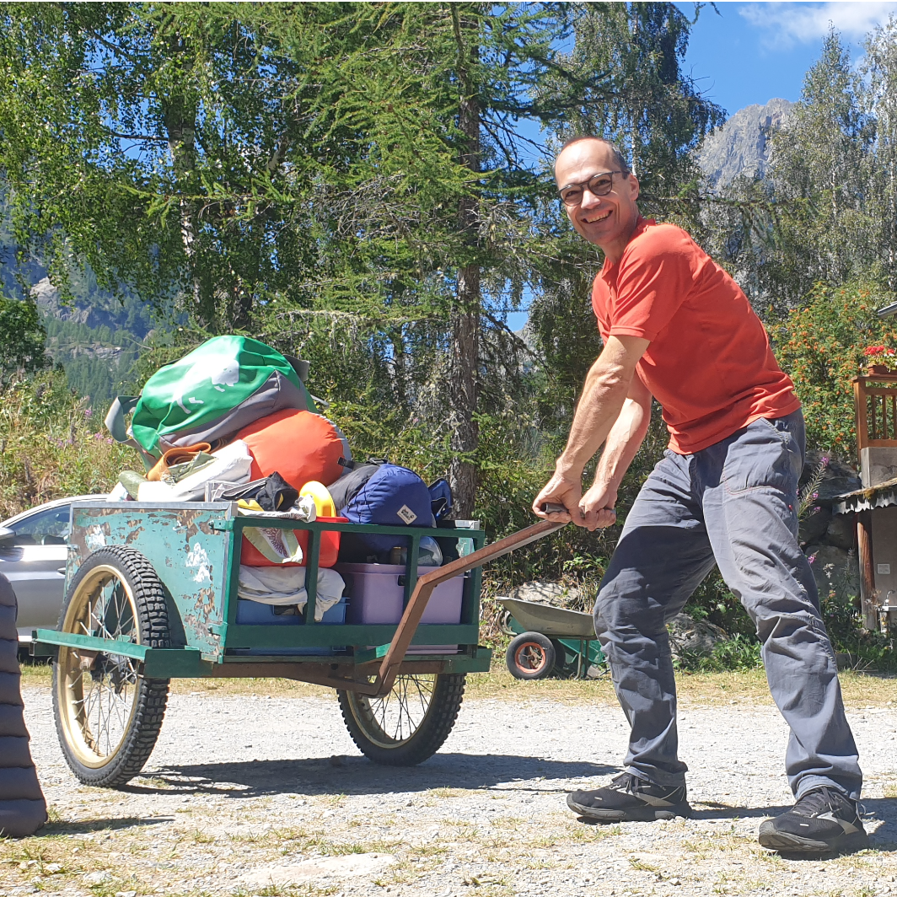
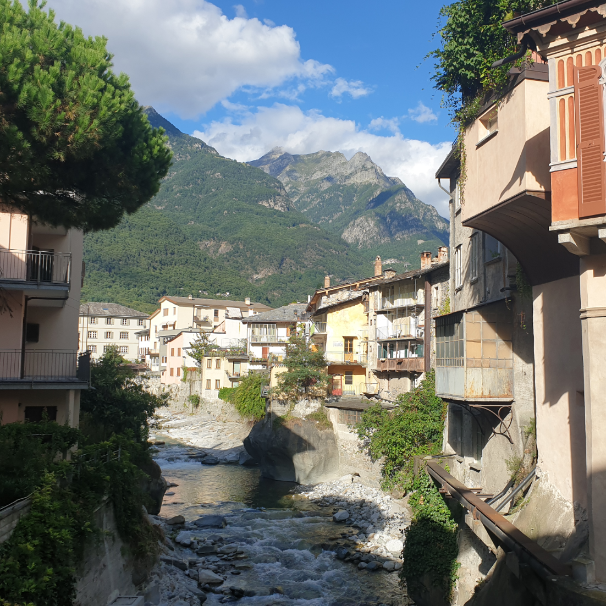
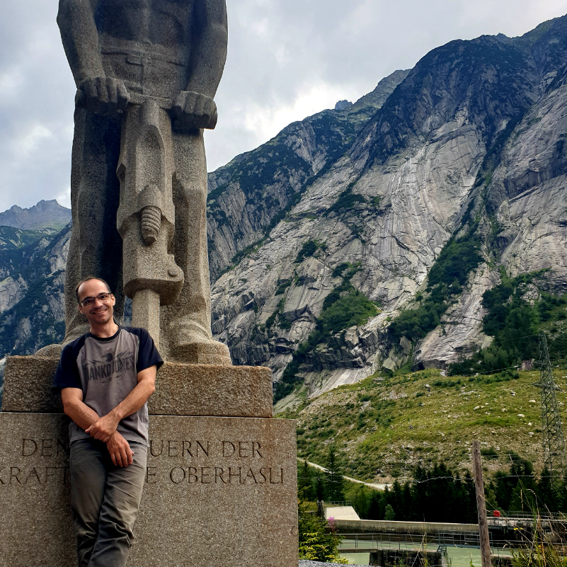
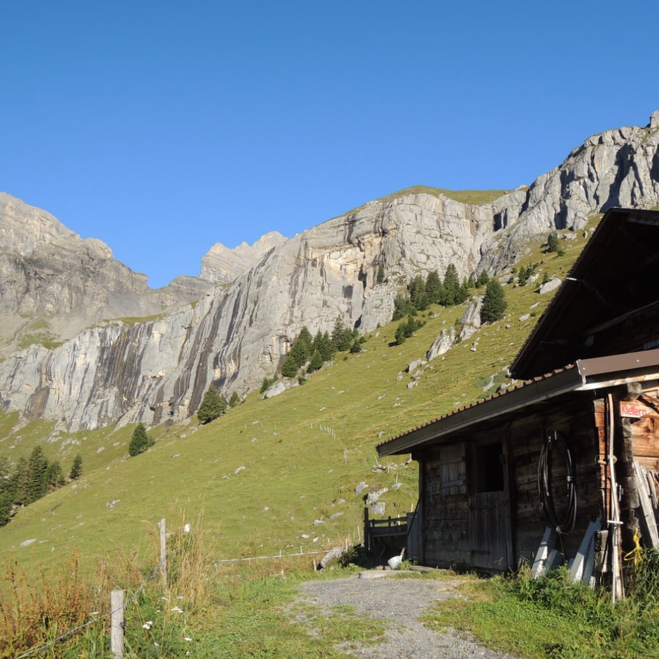
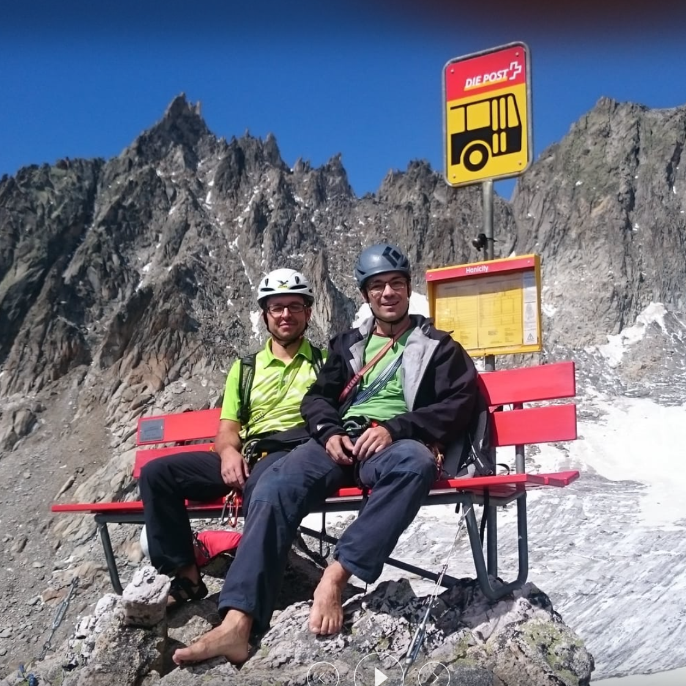
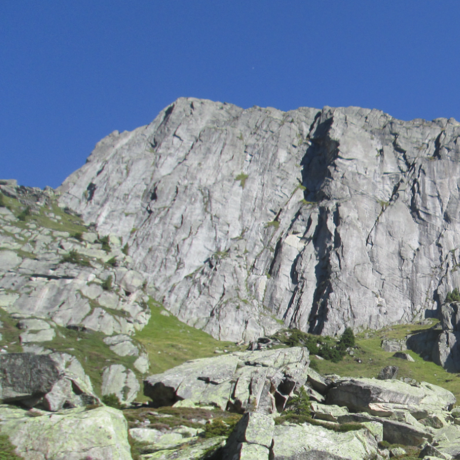
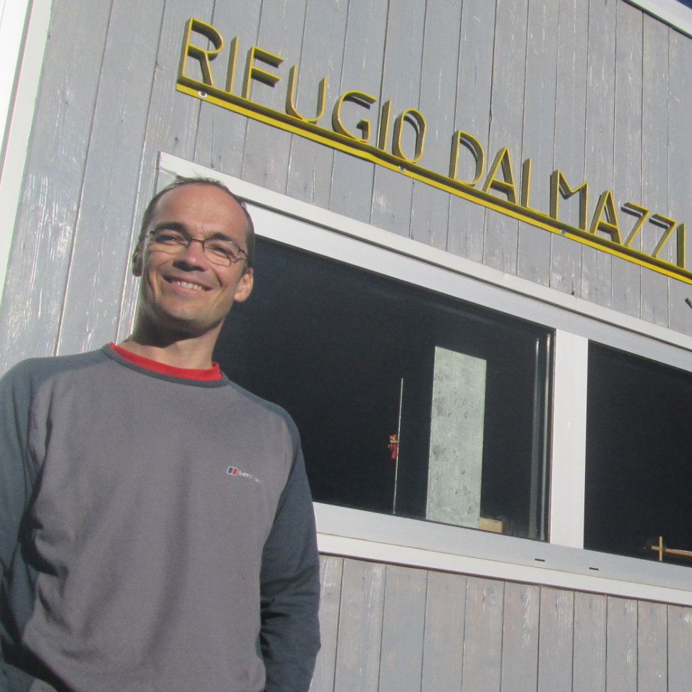
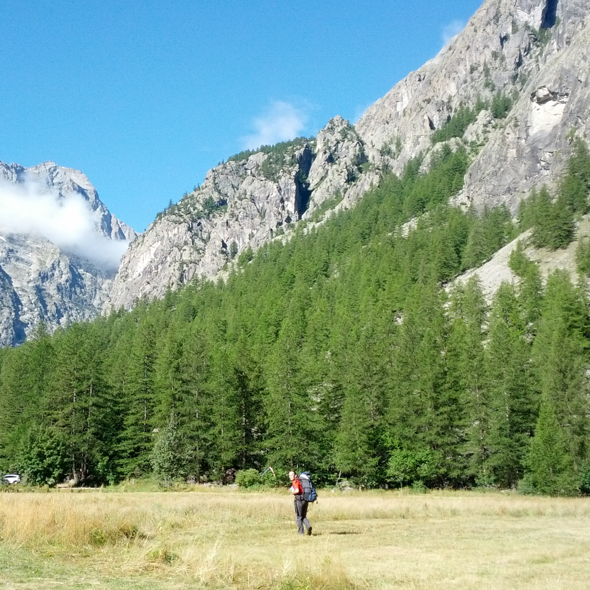
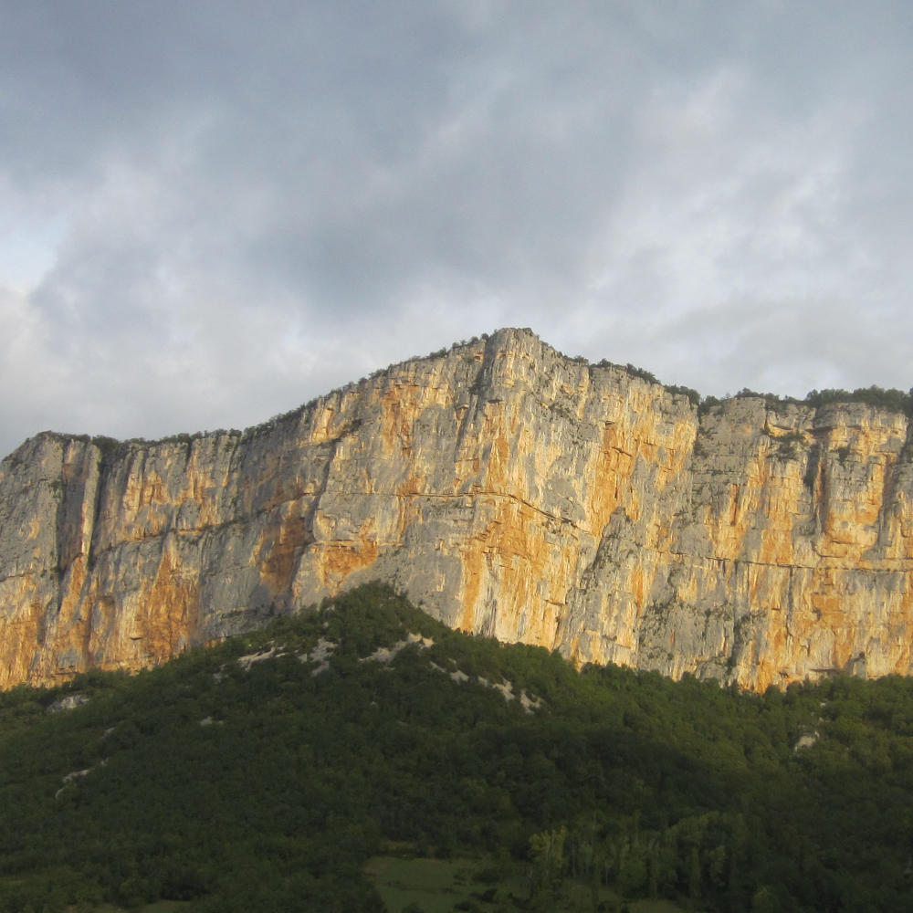
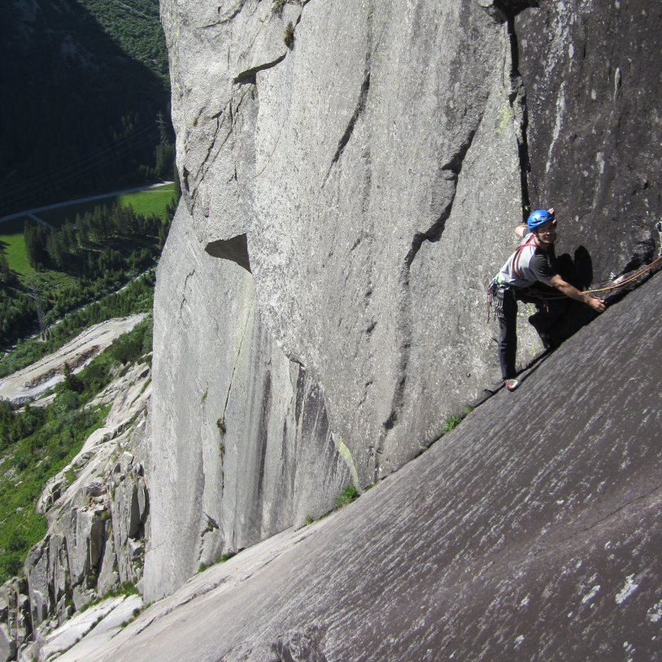

Martin & Thomas in hohen Wänden
2023
Göscheneralp & Bergseehütte
"Der See ist gar nicht kalt"
Kompressorwand
Diagonale 6
Amatörweg 6+ (partiell)
Geburtstagsweg 7 (partiell)
Tonis Lust 6+
Gunggel 7- (partiell)
Nebelmond 7
2022

Chamonix
"Manche mögens heiß oder als die Pizza pünktlich kam"
Le magicien d'OZ @ Barberine 6a+
Manhatten @ La Flegere 6a
Ombre et lumiere @ Tete d. Mesures 6a+
Pilier + Farinet @ Pilier de la Pissechevre 6b+
Atome Chrochne @ La Flegere 6b
Meduse @ Barberine 6c
2021

Chiavenna & Bergell
Placca di Bette
Via Gütz @ Il Perone 6b
Paradisdican @ Placche del Boggia 5b
Via Felici @ Spazzacaldeira 6a
Lasciamili @ Spazzacaldeira 6a+
Sasso del Drago
2020

Grimsel & Susten
Sagittarius 7
Savoi Vivre 7
2018

Ueschenen & Engelhörner
"Feinster Kalk, leckerster Käse"
Klingenthal
Parallel 6-
Diagonale 6+
Aurikel Primula 6
Zürcher-Sportweg 8- (technisch)
Gagelfänger 7
Lustgarten 7-
Schneewittchen 6+
2017

Siedelenhütte
"Leidende Gletscher, Hannibal & Nussgipfel"
Klettergarten
Conquest of Paradies 7-
"FamniGni"?
Niedermann 7-
Nolens Volens 7+
Hanimoon 7-
2016
Salbitschijen
"Eine Woche klettern im schönsten Granit"
Hüttenklettergarten
Niedermann 6
Incredible 6+
Mocca 6+ (partiell)
Hamavre 7-
Geier 7
2015

Göschenen & Presles
Bijou @ Sandbalm 7
Südpfeiler @ Gandschijn 7-
Wädlichlimser @ Schöllenen 6b+
Kit ou Double 6a+
Le Culte Du Champ 6a+
Fhara Kiri 6c+
Les Temps des Guenille 6b
2014

Aosta & Dalmazzi
Topo Pazzo Klettergarten
Anchorage 6a
Nulla al caso 6c
Les chamois volants 5c
Profumo Proibito 6a+
Ahi Ahi Ahi + Venus 6b+
2013

Ailefroide
Pilier de Levant 6a
La Nocturne 6a
Le Surplomb jaune 6a
Freeday 6a+
La vie devant soi 6b+
Les montagnards sont las 6a+
Les Traverses Klettergarten
2012

Annecy & Presles
L'Imperial 6a
Chyrsanthèmes + Topomaniak + Piri 6b
Fait D'Hiver 6b
Pilier de Nugues 6b
Et on tuera tous les Baba 6c
La Discrète 6b+
Absolue 6b
2011

Grimsel
"Ein erster, kleiner Ausflug in die Welt der Mehrseillängen"
Sans souci + Divertimento @ Wissenflue 7-
Quarzriss 6+
Handeggverschneidung 6+
Sagittarius 7
Hochfluh Klettergarten
Brezil 7-
Bügeleisen 7
Abadia 7 (partiell)
Lehn Klettergarten